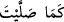
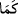
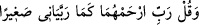

Nitekim Allah Teâlâ şöyle buyuruyor: “Allah nezdinde Îsâ’nın durumu Âdem’in
durumu gibidir.” (Âl-i İmrân, 3/59) Yâni buradaki benzetme bir yöndendir ki o da Îsâ
(a.s.)’ın babasız yaratılmasıdır.”
Mişkât Şerhi’nde zikredildiğine göre, “__WORD__ (salât ettiğin gibi)” ifadesinde işâret
edilen benzetme, eksik olanı tam olana katma türünden değil, bilinmeyen bir durumu
bilinen ile açıklamak içindir. “Ey ev halkı! Allâh’ın rahmeti ve bereketleri sizin
üzerinizdedir. Şüphesiz ki O, övülmeye lâyıktır, iyiliği boldur.” (Hûd, 11/73) âyeti
nâzil olunca İbrâhim (a.s) ve âilesine salât ve selâm mü’minler arasında meşhur oldu.
Hepsi Hak Teâlâ’nın İbrâhim (a.s)’a selâm ve bereket gönderdiğini anlamışlardı. Bunun
üzerine Hz. Peygamber (a.s): “İbrâhim’e gönderdiği gibi meşhur bir salevât da bana
göndermesi için Allah Teâlâ’ya duâ edin!” buyurdu.
“__WORD__”daki kâf harfinin var olanı pekiştirmek için olduğu, vukû bulan bir sebep üzerine
olmadığı söylenir. Nitekim “__WORD__ (Rabbim! Küçüklüğümde onlar
beni nasıl yetiştirmişlerse, şimdi de sen onlara (öyle) rahmet et!)” (el-İsrâ, 17/24)
âyetinde durum böyledir. Terbiye, anne baba tarafından vâki olmuştur, bu olan terbiyeye
karşı rahmet talep edilmektedir. O halde yukarıdaki kâf harfi, zaten var olan rahmeti
pekiştirmek içindir. Yâni onlara rahmet yarat demektir. Bu yaratma zaten kesin olarak
vardır. Öyleyse şöyle demiş oluyor: “Kendi sevgiline (a.s) selâm gönder ve ona varlık
ver, tıpkı daha önce dostun İbrâhim’e varlık verdiğin gibi.” Bu mânâ yukarıda geçen ez-
Zıyâü’l-ma‘nevî’deki mânâya yakındır.
Demişlerdir ki: Bu benzetme ile Hz. Peygamber (a.s) kendi ümmetine tevâzu yolunu
öğretmiş ve atalara hürmet etmeye işâret etmiştir. Yâni, “Bana salât ve selâm
göndermek İbrâhim (a.s)’a selâm göndermekten daha üstün ise de, onu rütbede daha
üstün görürüm, ona atalık hürmetimi esirgemem.” demektir. Bunun gibi, Hz. Peygamber
(s.a.)’den nefsi kırma ve kibir şüphesini yok etmeye dâir çok rivâyetler vardır. Meselâ:
“Ben yeryüzünün kendisi için yarılacağı (kabirden kalkacak) ilk kimseyim, fakat
övünmek yok.[292] Ben Allâh’ın sevgilisiyim, fakat övünmek yok. Ben evvelkilerin ve
sonrakilerin Allah katında en değerlisiyim, fakat övünmek yok.[293] Beni Mûsâ’dan
üstün tutmayın.[294] Beni İbrâhim’e tercih etmeyin. Hiç kimsenin benim Yunus’tan
daha hayırlı olduğumu söylemesi gerekmez.”
İbrâhim (a.s.)’a ve âilesine salevât getirmemiz, İbrâhim (a.s.) Beyt’in binasını
tamamladıktan sonra onların hacılar için rahmetle duâ etmeleri sebebiyledir. Biz de
onlara salât ederek mukabele bulunmuş oluyoruz.
İmam Nîsâbûrî şöyle demiştir: “Çünkü İbrâhim (a.s.) Allah’tan İsmâil’in
zürriyetinden bir peygamber gönderilmesini istemiş ve şöyle duâ etmiştir: “Ey
Rabbimiz! Onlara içlerinden … bir peygamber gönder.” (el-Bakara, 2/129) Bundan
dolayı Peygamberimiz (a.s.): “Ben atam İbrâhim’in duâsıyım.”[295] buyurmuştur. Hz.
Peygamber (s.a.) de İbrâhim (a.s.)’a mukabelede bulunmuş, ona teşekkür etmiş, Allah